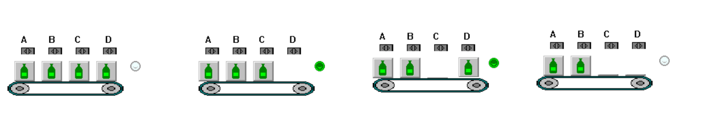
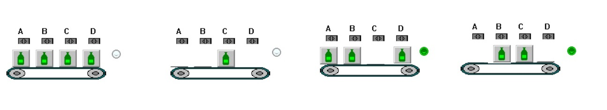
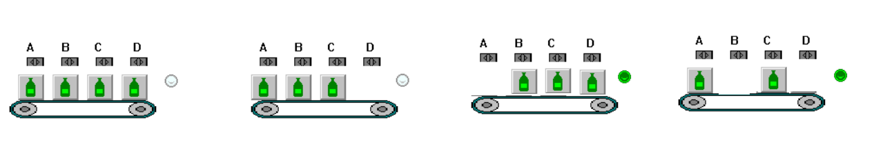

AUTOMATAS
Deposito
Deposito
En una instalación con un depósito de agua con tres detectores, uno en la parte inferior, otro la parte media, otro en la parte superior y una luz roja.
Crea la función lógica de activación de la luz roja cuando, el depósito no tenga agua o haya un error con las detectores de agua, ejemplo que estén los dos detectores superiores y no esté en inferior
INICIO
Embotelladora

Embotelladora
En una instalación embotelladora, me vienen por una cinta transportadora botellas en grupos de 1, 2 3 o 4 botellas,
Cuando los grupos sea de 3 botellas de encendera una luz verde
Crea la función lógica del encendido del piloto
INICIO
Embotelladora 2

Embotelladora
En una instalación embotelladora, me vienen por una cinta transportadora botellas en grupos de 1, 2 3 o 4 botellas,
Cuando los grupos sea de 2 o 3 botellas de encendera una luz verde
Crea la función lógica del encendido del piloto
INICIO
Embotelladora 3

Embotelladora
En una instalación embotelladora, me vienen por una cinta transportadora botellas en grupos de 1, 2 3 o 4 botellas,
- Las botellas detectadas con el sensor A contienen 3 litros de agua
- Las botellas detectadas con el sensor B contienen 2 litros de agua
- Las botellas detectadas con el sensor C contienen 1 litros de agua
- Las botellas detectadas con el sensor D contienen 1 litros de agua
Crea la función lógica del encendido del piloto
INICIO